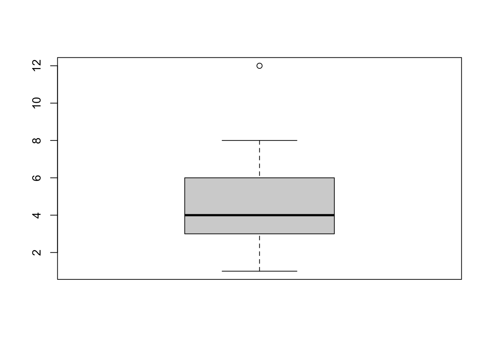
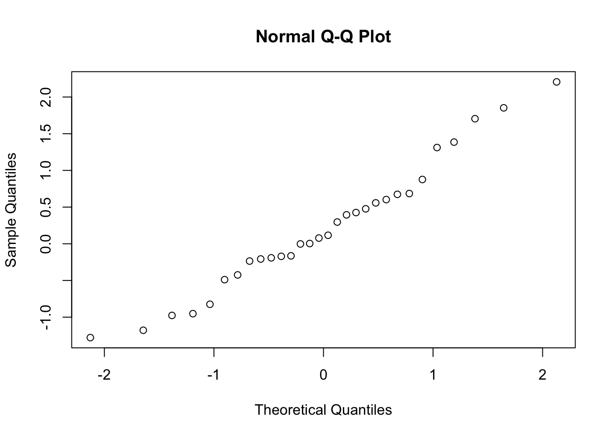

age_ratio <- sum(peru$age < 18) / sum(peru$age >= 18)Quantitative Analysis
Quantitative analysis analyses real-world phenomena using numbers. To make valid descriptive and causal inferences from the particular to the general, quantiative methods tend to rely on statistical methods. In addition, statistical models can also be used for prediction. In this section, we will focus on descriptive and causal inference.
Data for quantitative analysis is typically organzied in data sets. Data sets structure data in tables, where each observation is saved in one row, and each attribute or variable is saved in one column.
Data types
Types
There are different types of numeric data. The types of data determines what kind of analysis makes sense and how data should be visualized. Broadly, each type can be categorized as being categocial or numeric data.
Categorical data
Categorical data encompass all quantitative data types that are not a meaningful measurements by themselves and thus do not convey magnitude. Furthermore, they can only take on limited values or levels. As a result, you cannot apply any meaningful arithemtic operations like addition or subtraction to categorical data. Examples include gender, blood type, consumer satisfaction, and agreement.
Categorical data can be further split into nominal and ordinal data. Nominal data falls into clear categories. The categories cannot be ordered or ranked and represent a property beyond their value. For example, we can assign each blood type a numeric value but the numeric value has no meaning. Ordinal data can be ordered from low to high. Examples include measures of satisfaction or agreement.
Numerical data
Numerical data has a natural and inherent meaning. You can apply meaningful arithmatic operations to the data. Examples include measures of height, weight, temperature, or counts.
Numerical data is either discrete or continuous. Discrete data can only take on integer values, which are countable. One example of discrete data are counts often found in census data. Continuous data can take any values within their respective domain. Generally, continuous data is thus not countable.
Countability
Countability refers to the fact that, in theory, it is possible to count all numbers between any two numbers. More technically, a set of numbers is countable if it can be mapped one-to-one to the set of integers. In the case of continuous data, values can be infinitly precise and there are thus infinitely many numbers between any two values.
Sources
Quantitative data can be obtained through various sources. Common examples include:
- Interviews or surveys (incl. seroprevalence surveys)
- Employment records
- Medical records
- Death certificates
- Institutions or agencies
In recent years, computational advances have allowed researchers to turn ever more phenomena into data. For example, text, image, audio, and video formats have been turned into numeric data and thus made analysable through statistical methods.
Measures of frequency
As described above, quantitative analysis uses numbers to measure and analyse phenomena. Besides counts, ratios, proportions, and rates are commonly used measures of frequency.
Ratios
Ratios measure the relative magnitute of two quantities. That is, they measure how many times one quanity is bigger than another quantity. These quantities do not need to be related.
\text{ratio} = \frac{\text{quantity 1}}{\text{quantity 2}}
Ratios are continous quantites between 0 and infinity. If the ratio is smaller than 1, the quanitity in the denominator is smaller than the quantity in the numerator. If the ratio is equal to 1, the two quantities are the same. If the ratio is larger than 1, the quantity in the numerator is larger.
Examples of ratios include the odds ratio, which compares the magnitude of the odds of two events.
Odds
Mathematical odds are ratios of probabilities of an event occuring relative to the event not occuring. If A is our event we can write,
\text{odds} = \frac{\text{P(A)}}{\text{1 - P(A)}}
Odds ratios compare the magnitude of the odds of two events. If A and B are our events, we write
\text{odds ratio} = \frac{\text{odds(A)}}{\text{odds(B)}}
Further examples of ratios in the field of epidemiology include
- risk ratios
- death-to-case ratios
- standardized mortality ratios
Risk ratio
Risk ratios are ratios of the risk of two seperate groups of the population. For example, if we are interested in risk factors and the risk of disease we could calculate the ratio of risk for those with the risk factor to the risk for those without the risk factor. A ratio larger than 1 would suggest an increased risk of infection for those with the risk factor.
\text{risk ratio} = \frac{\frac{\text{subgroup(A)}}{\text{total(A)}}}{\frac{\text{subgroup(B)}}{\text{total(B)}}}
We can obtain ratios in R and stata through simple arithmetics. For example, if we wished to calculate the ratio of under 18 year olds and adults for our exercise data set, we could use the following code.
count if age < 18
generate age_u = r(N)
count if age >= 18
generate age_o = r(N)
generate age_ratio = age_u / age_oProportions
Proportions are a type of ratio. Unlike some ratios, proportions measure the relative magnitude of a subset to its superset. If A_1 is a subset of A, the proption of A_1 to A can be expressed as
\text{proportion} = \frac{\text{subgroup}}{\text{whole}}
Proportions are continuous measures as well, yet unlike other ratios, they are bounded between 0 and 1. Proportions are commonly presented as percentages, or fractions.
An example of a proportion is the point prevalence, which divides the total population at a specific time by the number of active cases in the population.
Prevalence
Prevalence is a measure of the number of active cases of a disease in specific period of time. Point prevelance measures prevalence not across a period of time but rather at a specific point in time. For example, prevalence on a certain date is considered point prevalence.
\text{point prevalence} = \frac{\text{active cases of a disease}}{\text{population}}
Further examples of proportions include + Attack rate + Case fatality rate + Sensitity and specificity
Rates
Rates typically measure proportions over a specified period of time. In the context of diseases, rates thus measure how fast something occurs in a given population.
Incidence
The incidence rate measures the number of new cases within the at risk population across a specified period of time.
\text{incidence rate} = \frac{\text{new cases of a disease during total of time}}{\text{population}\times \text{time periods}}
Often, incidence rates are presented as incidence per 1,000. Incidence rate per n can be obtained by multiplying the incidence rate by n.
Sampling
Often the goal of research is to determine measurements of a target population. If the region is large, reaching all subjects in a target population can be costly both in terms of money and time.
Target population
The target population refers to the population under consideration in a study. This can be all residents of a country, or specific subgroups.
The target population is often different from the study population. The study population may be limited to adults, or to subjects living in a specific area. For example, if we wish to generalize about the population at risk in the entire country, we might be limited to sampling from the population at risk from a specific sub-national region. To be able to generalize from the study population to the target population the study population needs to be reasonably representative of the target population as a whole.
Study population
The study population refers to all subjects in the target population to which the researcher has access, and from which the researcher can sample.
Descriptive statistics
Descriptive statistics only involve the sampled data. The immediate aim is not to generalize to the target population but rather to summarize and describe the sample.
Mean
The artihmetic mean is a measure of central tendency. That is, it is a measure for the center of the sampled values or the most typical value.
The sample mean is the sum of all observed values across the sample divided by the sample size. More technically,
\bar{x} = \frac{1}{N} \times \sum_{i=1}^N{x_i}
\bar{X} is typically the symbol for the sample mean of variable X. N is typically the symbol for the sample size. \sum is the symbol for a sum. In out case, the sum contains all observations of the variable x from i = 1 to the last observation with index N. Assuming N= 3 values of X were observed, X_1, X_2, X_3. To calculate the mean, we would sum all three values, X_1 + X_2 + X_3 and then divide it by N = 3.
Note
If we transform variables by applying a function to them, such as converting all values from centimeters to meters, this propagates linearly to the mean. In other words if we multiply all our values by 100, the mean will also be 100 times higher. This is not a general property of the mean, however, and only holds for linear changes to our variable.
\frac{1}{N} \times \sum{a + b \times x_i} = a + b \times \bar{x}
Furthermore, the sum of the means of two or more variables is equal to the mean of their sums.
\frac{1}{N} \sum{(x_i + y_i)} = \bar{x} + \bar{y}
Both R and Stata have integrated functions to calculate the mean of quantitative data. They take a variable as input and produce the arithmetic mean as the output. Stata also provides the 95% confidence interval.
mean(var)mean var
Danger
The mean is sensitive to outliers.
As the mean requires that underlying observations can be summed and divided, the data needs to be numeric.
Median
The median is an alternative measure of central tendency. Half of the data are below, and the other half of the data are above this value. Compared to the mean, it is less affected by extreme values, or outliers.
To obtain the median, we first order all observations of a variable from smallest to largest. Then, if the sample size is odd, the median is the middle value. If the sample size is even, we calculate the average between the two observations closest to “the middle”. The position of the median given an odd sample size can be calculated using m = \frac{(n+1)}{2}. The position of the next closest observations to the median given an even sample size can be calculated using m_{l} = \frac{n}{2} and m_{s} = \frac{n}{2} + 1.
Similar to the mean, the median can be directly calculated in R and Stata. Both programs take the observed values as input and produce a single statistic.
median(var)tabstat var, s(median)Unlike the mean, the median does not require the data to be numeric. However, you need to be able to order the underlying data. So the data need to be either numeric or ordinal.
Mode
The mode is another measure of central tendency. It is the most frequently occuring value in a sample.
There is no direct implementation to determine the mode in either R or Stata. The easiest way is to create frequency tables and find the most frequent value “by hand”.
tab(var)tab varIf the data is neither numeric or ordinal, the mode is the most apt measure of central tendency.
Range
The range is a measure of spread of the observed values. It is the difference between the maximum and the minimum.
Quartiles
Quartiles divide the sorted data into four equally sized sets. That is, the first quarter Q_1 is the upper boundary of the group that contains the bottom 25% of the data. The second quarter Q_2 is the median dividing the data set into two equal halves.
Variance
The sample variance is another measure of spread. It is the sum of squared differences between each observed value and the mean, divided by n-1. Formally, the variance is calculated using
s^2 = \frac{1}{N-1} \sum_{i = 1}^N (x_i - \bar{x})^2
Note
Linear transformation of variables does not propagate linearly to variance. That is, added constants cancel out and constant factors are squared.
\frac{1}{N-1} \sum_{i = 1}^N (a+b \times x_i - (a + b \times \bar{x}))^2 = b^2 \times s^2
var(var)tabstat var, s(variance)Covariance
Covariance measures linear dependence between variables. In other words, it measures how two variables vary together. Formally, to determine the sample variance, we can write
\frac{1}{N-1} \sum_{i = 1}^N ((x_i-\bar{x})(y_i-\bar{y})) = s_{xy}
The range of the covariance is the set of real numbers.
Danger
Covariance is sensitive to unit of measurement. That is, if the variables are linearly transformed the covariance changes.
cov(var1, var2)corr var1 var2, covCorrelation
Correlation is closely related to covariance. It standardizes covariance and is thus also measures the linear dependence between variables. We can represent correlation in terms of the covariance and the variance.
\frac{s_{xy}}{s_{x}s_{y}} = \rho
Alternatively, the sample correlation can be written as
\frac{\sum_{i=1}^N{(x_i-\bar{x})(y_i-\bar{y})}}{\sqrt{\sum_{i=1}^{N}{(x_i-\bar{x})^2}\sum_{i=1}^{N}{(y_i-\bar{y})^2}}} = R
The range of the correlation is between -1 and 1.
cor(var1, var2)corr var1 var2Visual tools
Graphical visualizations are powerful tools to understand and communicate statistics. Frequency tables, histograms, boxplots, and scatterplots are some introductory examples of such visualization tools. Note that the code examples are very basic. For more sophisticated and arguably prettier implementations please consult the ‘Resources’ tab.
Frequency tables
Frequency tables are tables that summarize your data. For discrete, ordinal, and nominal data, frequency tables show the count of each value. Continuous data have to be binned to be represented in frequency tables.
table(var)tab varNote that you can add an additional dimension to your frequency table to display the observed, concurrent frequency of two variables or value pairs. The intersection between a row and a column contains the count of the observed coocurance of the two variables’ values.
table(var1, var2)tab var1 var2Histograms
Histograms display the frequency of each value observed in the data set. It displays either the absolute or relative frequency on the y-axis and each value on the x-axis. Histograms display binned, numeric data.
hist(var1)ggplot(df)+
geom_hist(aes(x))histogram v1Boxplots
Boxplots are graphical representations of quartiles and outliers of a distribution. They consist of a box outlining the range between the first quartile, Q_1,and the third quartile, Q_3. The line dividing the box represents the median. The lines extending from the edges of box are called whiskers. The lines end at the adjacent values.
Adjacent values
Adjacent values describe the most extreme values that are not cosidered potential outliers.
Boxplots conveniently display potential outliers or extreme values as asterisk or dots outside of the whiskers.

boxplot(var)ggplot(df)+geom_boxplot(aes(x=var))graph box varScatter plots
Scatter plots are graphical representations of observed value pairs of two variables in our data set. Each variable is represented by an axis and each value pair is a point. Note that scatter plots are largely used to display the replationship between numerical data.
Inferential statistics
After summarizing and examing the sampled data, researchers often want to make more general claims about unknown population quantities. For example, after calculating the seroprevalence of a disease in the sample, a researcher wants to make claims about the seroprevalence in the target population. We call population quantities estimated based on sampled data estimates. Estimators are functions that map to estimates that should be close to the true population quantity. Estimators take observed, sampled data as input.
Statistic
A statistic is any real-valued function of random variables. Examples include the sample mean \bar{x}, the sample variance s^2, and the minimum of X, min(x).
Hypothesis testing
Hypothesis tests are statistical tests that compare observed values against hypothesized values. In other words, hypothesis testing results in a rejection or failure to reject a null hypothesis. Rejection of the null hypothesis is done in favor of a research, or alternative, hypothesis.
Null hypothesis
The null hypothesis is the hypothesis to be tested. Often the null hypothsis is a null effect or equality. Note that we do not accept the null hypothesis but rather fail to reject it. The null hypothesis is written as H_0.
The goal of the researcher is typically to reject H_0 with a high statistical degree of certainty.
Alternative hypothesis
The alternative hypothesis, also called the research hypothesis, contradicts the null hypothesis. The alternative hypothesis is written as H_1 or H_a.
The decision to reject the null hypothesis is based on the rejection region or critical region. If sample values are elements of the rejection region, H_0 is rejected. If sample values are elements of the complements of the rejection regions, that is if they are elements of the nonrejection region, we fail to reject H_0.
Examples of null and alternative hypotheses are: + H_0: \mu = \bar{x} H_1: \mu \neq \bar{x} + H_0: \mu = \bar{x} H_1: \mu > \bar{x} + H_0: \mu = \bar{x} H_1: \mu < \bar{x}
Note that the first example requires a two-tailed test, whereas the last two examples require a one-tailed tests.
Two-tailed hypothesis test
A two-tailed hypothesis test has a two-sided alternative hypothesis. That is, the alternative hypothesis states that the population quantity of interest is either larger or smaller than the one specified in the null hypothesis.
One-tailed hypothesis test
A one-sided hypothesis test is either left-sided or right-sided, meaning that the population quantity of interest is either less than or greater than the one specified in the null hypothesis.
Errors
The goal of hypothesis testing is to reject or fail to reject H_0 with a specific degree of certainty. However, hypothesis testing can lead to incorrect conclusions. There are two errors: type 1 and type 2 errors.
Type 1 errors describe the scenario when H_0 is true but it is rejected. That is, after our test we conclude that H_0 is false, but it is in fact true.
Type 2 errors describe the scenario when H_1 is true but it we failed to reject H_0. That is, after our test we conclude that H_1 is false, but it is in fact true.
| H_0 is true | H_0 is false | |
|---|---|---|
| Reject H_0 | Type I | Correct |
| Fail to reject H_0 | Correct | Type II |
We can assign probabilities to committing both types of errors. The Type I error probability is called the significance level and is denoted by \alpha. The Type II error probability is typically denoted by \beta. 1-\beta is the called power.
Tests about a single mean
The following section will briefly describe hypothesis tests for inferences about a single mean. The z-test, and the t-test are both parametric tests that assume that the observed data is distributed normally. The Wilcoxon signed rank test relaxes that assumption.
Normal distribution
The normal distribution is a continuous, symmetric probability distribution. A probability distribution is the collection of probabilities of all possible values. The area of a probability distribution must sum to 1 (probabilities above 1 are impossible). The normal distribution is bell shaped and centered at the mean. The curve is defined for all real values, that is, the distribution assigns probabilities p > 0 to all real values (-\infty, \infty). However, the tails of the distribution
Any normal distribution is defined by two values - the mean and the variance. That is why we write N(\mu, \sigma^2) to describe a normal distribution by its mean \mu and the variance \sigma^2.
Generally, the normality assumption is not very strict and depends on the sample size and your own judgement. Normality is typically tested in R and Stata using normal plots or quantile-quantile plots. The goal is for points to be as close as possible to a diagonal line. There is no standard, however, for how much the data can deviate from a straight line.

qqnorm(var)qnorm varZ-test
The z-test is a hypothesis test for inferences about the population mean if the variance \sigma of the population is known or the sample size is large (n > 30).
The z-test compares the test statistic (the z-score) to the critical value, which is calculated based on the desired significance level \alpha. The z-score is the standardized difference between the sample statistic (the sample mean) and the value specified in the null hypothesis. Formally,
z = \frac{\bar{x}-\mu_0}{\sigma_{\bar{x}}}
\bar{x} is our sample mean. \mu_0 is the mean specified in the null hypothesis. \sigma_{\bar{x}} is the standard deviation of the sampling distribution of \bar{x}. We know that \sigma_{\bar{x}} = \frac{\sigma}{\sqrt{n}}. That is, the standard error of the mean is equal to the population standard deviation divided by the square root of the sample size. While we often do not know the true population variance, we can use our sample variance s^2 instead if the sample size is large enough (N > 30). Generally, however, if the population variance is unknown, a t-test might be more appropriate.
Standard error
The standard error is the standard deviation of a sampling distribution. That is, assuming we draw a large number of samples from our population, we get different estimates of a statistic. The standard deviation of the resulting distribution, which is called the sampling distribution, is called the standard error.
We obtain the rejection region based on our null and alternative hypotheses and the pre-determined significance level \alpha - typically \alpha = 0.05.
| \alpha | 0.10 | 0.05 | 0.01 |
|---|---|---|---|
| one-tailed | -1.28 or 1.28 | -1.645 or 1.645 | -1.96 or 1.96 |
| two-tailed | |1.645| | |1.96| | |2.58| |
Danger
The z-test assumes that the test statistic is normally distributed and that the population variance is known. We thus need a sample size of at least 30 for the z-score to be distributed approximately normally and our sample approximation of the population variance to be close to the true population value (see also Central Limit Theorem).
Example
We are interested in the mean height of five-year old children in a region of a country. For our study we sample 35 five-year olds randomly and find that the mean height is \bar{x} = 104 cm. Based on the reference value for the country (114 cm) we want to determine if the sample deviates from the norm.
The null and alternative hypotheses are:
H_0: \mu = 114
H_a: \mu < 114
The signficance level is \alpha = 0.01.
Given a population standard deviation of 15, we calculate the z-score:
z = \frac{104-114}{\frac{15}{\sqrt{35}}} = -3.944
Because -3.944 < -1.96 we reject the null hypothesis and it follows that the sample mean is signficantly different from the norm.
z = (mean(x) - h_0) / (sd(x) / sqrt(n))
ztabstat var, s(sd)
ztest var == h_0, sd(...)T-test
The t-test is an alternative to the z-test if the population standard deviation is unknown. Similar to the z-test, the t-test calculates a test statistic and tests whether the statistic is in the rejection region. T-tests can be one-tailed or two-tailed.
Like the z-score, the t-statistic measures the standardized difference between the observed and the hypothesized mean. We calculate the t-statistic using
t = \frac{\bar{x}-\mu_0}{\frac{s}{\sqrt{n}}}
Unlike the the z-score, the t-statistic is not assumed to be normally distributed. Instead it follows a student’s t distribution. The critical value thus depends in part on the degrees of freedom (d.f.). We thus write t_{\alpha, \text{d.f.}} for the critical value at significance level \alpha. Usually, statistics programs provide the critical value for you, otherwise you can look it up here.
Degrees of freedom
Degrees of freedom measure the number of independent, free values in a sample. The degrees of freedom equal n-1, where n is equal to the sample size. For illustration consider randomly sampling values from your sample without replacement. For each draw except the last you cannot be sure which value is next so n-1 values are free to vary.
Danger
The t-test assumes that the test statistic is approximately t-distributed or that the sample size is sufficiently large. Unlike the z-test it assumes that the population variance is unknown.
Example
We are interested in the mean weight of five-year old children in a region of a country. For our study we sample 35 five-year olds randomly and find that the mean weight is \bar{x} = 18 kg and variance of our sample is s^2 = 9. Based on the reference value for the country (20 kg) we want to determine if the sample deviates from the norm.
The null and alternative hypotheses are:
H_0: \mu = 20
H_a: \mu < 20
The signficance level is \alpha = 0.01.
With an unknown population variance, we calculate the estimate of \sigma, \hat{\sigma} = s:
t = \frac{18-20}{3{\sqrt{35}}} = -0.113
Because -0.113 > t_{0.01, 34} = -2.441, we fail to reject the null hypothesis and it follows that the sample mean is not signficantly different from the norm.
qt(p=1 - alpha, df=df, lower.tail = FALSE)Replace alpha with your desired level of significance and df with the degrees of freedom. Note that if you use a two-tailed test you need to divide your level of significance by two. If you are only using a lower-tailed test be sure to set lower.tail to TRUE.
t.test(x= var, alternative = "two.sided", mu = h_0)t.test() is a function that conducts a t-test. The output presents p-values and confidence intervals as measures of how well the sample data fits the null hypothesis. If the p-value is below 1-\alpha, the test rejects the null hypothesis.
display invttail(df, alpha)Replace alpha with your desired level of significance and df with the degrees of freedom. Note that if you use a two-tailed test you need to divide your level of significance by two.
ttest varname == h_0ttest is a function that conducts a t-test. The output presents p-values and confidence intervals as measures of how well the sample data fits the null hypothesis. If the p-value, or P(|T| > |t|) is below 1-\alpha, the test rejects the null hypothesis.
Wilcoxon signed-rank test
Unlike the two previous tests, the wilcoxon signed-rank test does not assume that the data are normally distributed or have large sample properties that approximate a normal distribution. Furthermore, the wilcoxon signed-rank test is more resilient to outliers. It does however assume that the population data are distributed symmetrically and that the data are continuous.
The wilcoxon can be used to test for a population median (or mean - they are the same ). Based on the symmetry of the distribution of the observed data, the test statistic W is calculated based on the ranks of absolute differences to the hypothesized median (H_0). To obtain the test statistic, all ranks with a positive difference to the hypothesized median are summed. Formally,
w = \sum_i^N z_i \times r_i
where z_i is a binary variable indicating if the difference of value i to h_0 is positive. r_i is the rank of value i.
We test w against a critical value w_{\alpha} determined by the predefined significance level \alpha, the hypotheses (do we need to do a one-tailed or two-tailed test?), and the sample size. Note that for left-tailed and two-tailed tests the critical value w_{1-\alpha}=\frac{n \times (n+1)}{2} - w_{\alpha}, as w is symmetrically distributed.
Note that for large samples caculating the critical value is inconvenient. Instead we use the approximation w', which approximately follows a normal distribution for N > 24. The sampling distribution for w' is defined by the mean \bar{w'} = \frac{n \times (n+1)}{4} and the variance \s_{w'}= \frac{n\times (n+1)\times (2n+1)}{24} This allows us to compare w' to the table for critical value for z-scores using \alpha or \alpha / 2 depending on whether we use a one-tailed or two-tailed test.
w' = \frac{\sum_i^N z_i \times r_i - \frac{n \times (n+1)}{4}}{\sqrt{\frac{n\times (n+1)(2n+1)}{24}}}
As with the previous tests, statistics programs will determine the test statistic and critical values for you. If you want to look them up by hand you can find a table here. For large samples you can consult the table from the previous section on z-tests.
Danger
The wilcoxon signed-rank test assumes that the population data is symmetrically distributed. If you cannot reasonably make that assumption you should use the sign test.
Example
We will use a small sample example to illustrate the wilcoxon signed rank test to determine the median.
We want to determine if the median time between confirmation of a malaria case and treatment with ACT is below 24 hours in a random sample of size 10. For the purpose of the example we assume that the true time is distributed symmetrically in the population.
We specify our null hypothesis as H_0 = 24.0 and our alternative hypothesis as H_1 < 24.
The desired signficance level is \alpha = 0.05.
We tabulate the data to calculate the test statistic:
| \i | x_i | x_i - m_0 | r_i |
|---|---|---|---|
| 1 | 8.5 | -15.5 | 9 |
| 2 | 31.2 | 7.2 | 7 |
| 3 | 28.1 | 4.1 | 4 |
| 4 | 15.7 | -8.3 | 8 |
| 5 | 25.0 | 1 | 2 |
| 6 | 24.9 | 0.9 | 1 |
| 7 | 4.4 | -19.6 | 10 |
| 8 | 18.9 | -5.1 | 6 |
| 9 | 28.9 | 4.9 | 5 |
| 10 | 22.1 | -1.9 | 3 |
Summing up the ranks of the positive differences, we get w = 7+4+2+1+5 = 19. As described above, we make use of the symmetry of w w_{1-0.05}=\frac{10 \times (11)}{2} - w_{0.05} = 55 - 44 = 11. Because 19 > w_{1-0.05}. We thus fail to reject the null hypothesis.
wilcox.test(x = var, mu = h_0)wilcox.test() is a function that conducts a wilcoxon signed rank test. The output presents p-values and confidence intervals as measures of how well the sample data fits the null hypothesis. If the p-value is below 1-\alpha, the test rejects the null hypothesis.
signrank var = h_0signrank is a function that conducts a wilcoxon. The output presents p-values and confidence intervals as measures of how well the sample data fits the null hypothesis. It provides are slightly more detailed view then R.
Test of proportion
If we wish to draw inferences about population proportions based on sample proportions we can calculate the z-score. Sample proportions may be of interest for binary or dichotomuous variables. Similar to the test of means or medians we compare the sample proportion to the porportion specified in the null hypothesis.
For large samples the standardized z-score approximately follows a normal distribution. As a result, we can use the critical values defining rejection regions for the z-test. Formally, the z-score is defined as
z = \frac{\hat{p}-p_0}{\sqrt{\frac{p_0\times (1- p_0)}{n}}}
where s_{p_0}=\sqrt{\frac{p_0\times (1- p_0)}{n}} is the value of the standard error assuming H_0 is true.
For samples min(n \times p_0, n(1-p_0)) < 5, we need to use an exact test.
Danger
The hypothesis test introduced above assumes that N \times p \times (1-p) \geq 10, where N is our sample size and p is the sample proportion.
Example
Based on a previous estimate we hypothesize that the point prevalence of a disease is p_0 = 0.125. In our sample (N = 200) we observe a prevalence of \hat{p}=0.15. We thus specify in our null hypothesis that H_0: p_0 = \hat{p}. Based on a significance level of \alpha = 0.05 we determine that our critical values are z_a = |1.96|. We calculate z = \frac{p_0-\hat{p}}{\sqrt{p_0(1-p_0)/n}} and it follows that z=-45.7. We therefore reject the null hypothesis.
Test of variance
We know that the sample variance s^2 = \frac{\sum_{i=1}^N(x_i - \bar{x})^2}{(n-1)} is an estimator of the population variance \sigma^2. Similar to our estimators of means, medians and proportions, sampling entails uncertainty to our estimator due to sampling error. Thus, in order to make valid inferences we use hypothesis tests to draw inferences about \sigma^2. Typically, we do so in the context of measuring the precision or spread of our quantity of interest.
As with the parametric hypothesis tests about the mean and proportion mentioned above, we assume that our population data approximately follows a normal distribution. Beyond that, the test statistic again has the convenient property of following a known distribution, the chi-square distribution.
Chi-square distribution
The chi-square distribution is a continuous probability distribution that is only defined for positive values; that is, all negative values have a probability of p_{\chi^2} = 0. It is not symmetric and varies based on the degrees of freedom.
The test statistic \chi^2 is formally defined as
\chi^2_{N-1} = \frac{(N-1)\times s^2}{\sigma_0^2}
where $N-1 is our sample size minus 1, or the degrees of freedom of our sample. s^2 represents the sample variance and \sigma_0^2 represents the population variance specified in the null hypothesis.
The critical value is determined based on the degrees of freedom and our specified significance level \alpha. As with the other critical values, \chi^2_{\alpha, d.f.} is calculated by your statistics software. If you wish to determine it by hand though, you can find a table [here]
Danger
The chi-square test for the population variance assumes that the population data is normally distributed.
Tests about two means
We can further use hypothesis tests to test if two distributions and their related sample statistics are the same. The tests for two means are very similar to the ones for hypothesis tests about a single mean as they are based on the same basic proporties of sampling distributions. We again have parametric and non-parametric tests, that is, tests that make assumptions about the distributions of the sample statistics and their parameters. This section will look at two-sample z-tests, t-tests, and chi-square tests as examples of parametric tests. The Mann-Whitney test is an example of a non-parametric test.
Z-test
We calculate our test statistic using
z = \frac{(\bar{x}-\bar{y})- (\mu_x - \mu_y)}{\sqrt{\sigma_{x/N}^2 + \sigma_{y/M}^2}}
where (\bar{x}-\bar{y}) is the difference in sample means, (\mu_x - \mu_y) is the difference specified in the null hypothesis, and \sqrt{\sigma_{x/N}^2 + \sigma_{y/M}^2} is the standard error of the difference estimator. Note that the calculation of the standard error includes our population variance. Assuming large sample sizes (each N > 30), we can again make use of the large sample properties of the variance estimator defined above. As a result,
z = \frac{(\bar{x}-\bar{y})- (\mu_x - \mu_y)}{\sqrt{s_{x/N}^2 + s_{y/M}^2}}
Since the resulting test statistic, the z-score, approximately follows a standard normal, we can calculate the critical value in the same way as we did before. It is again determinded by the significance level \alpha.
Danger
The z-test for differences in means assumes that the two samples were sampled independently from populations with known variance. Similar to the z-test for single means, the latter restriction can be violated if the sample size is sufficiently large (n > 30).
Example
Thus far we have compared the mean height of children in a random sample of 35 under 5 year olds. Let us assume that we can divide the sample into subsamples by gender: 20 females and 15 males.
signrank var = h_0Welch t-test
Equal variance
Unequal variance
Mann-Whitney test
Chi-square test
Differences in proportions
Differences in more than two means
P-values
Confidence intervals
Linear regression
Diagnostics and assumptions
Interpretation
Logistic regression
Latent variable interpretation
A latent variable is a variable that is not directly observed or measured. Based on the unobserved process, researchers construct a measure that aims to capture the underlying, latent process. Examples of latent variables are depression, self-esteem, or intelligence.
Diagnostics and assumptions
Interpretation
Proportional odds models
If we wish to estimate a model with an ordered dependent variable, an ordered logistic model may be an apt choice. Examples of ordered dependent variables include
Exercises
Using the statistical software of your choosing,
- calculate the ratio of female to male participants
- calculate the fever point prevalence of the sample
- produce a boxplot of age and a histogram of the age groups
- using two-way frequency tables, stratify all symptoms first by age, then gender and conduct an approporiate significance test
- estimate a linear regression model regressing test result on age, gender, occupation, public transport, and family contact and produce a table of your results showing the estimates and standard errors for the effect of each independent variable
- determine the model fit (R^2), sample size (N), and predicted values (\hat{y}). What could be an issue with the coefficients?
- estimate a logistic regression model, regressing test result on age, gender, occupation, public transport, and family contact
- dermine the model fit (pseudo R^2) and percent correctly predicted
- create at least one latter plot and state the effect size as odds ratios